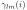
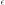
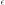
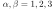
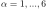

Next: Exchange Striction Up: Crystal Field Phonon Interaction Previous: The lattice dynamic terms Contents Index
To calculate crystal field parameters
 (
( is a short hand
notation for
is a short hand
notation for  ) for the
ion at site
) for the
ion at site  in the crystal with Stevens convention
we use the well known expressions of the point charge model:
in the crystal with Stevens convention
we use the well known expressions of the point charge model:
Here, the
 are computed from the relative position
 (in spherical coordinates)
of the point charges
(in spherical coordinates)
of the point charges  using
using
Equation (104) is based on the adiabatic approximation and
the dependence of the crystal field parameters on the displacements
 is not considered.
Going beyond the adiabatic approximation this dependence may be considered and
the crystal field parameters may be expanded in terms of the strain  and the
is not considered.
Going beyond the adiabatic approximation this dependence may be considered and
the crystal field parameters may be expanded in terms of the strain  and the
 leading to the crystal field phonon interaction. Minimizing the Energy with respect to
the strain tensor leads to expressions for the strain in terms of expectation values
of Stevens Operators and displacement operators.
leading to the crystal field phonon interaction. Minimizing the Energy with respect to
the strain tensor leads to expressions for the strain in terms of expectation values
of Stevens Operators and displacement operators.
The Hamiltonian can be written as a sum of phonon, crystal field and Zeeman contributions
(writing instead of for the crystal field parameter
indices, the index counts nuclei carrying with them
the charge producing the crystal field
 ,
the
,
the  index runs over magnetic ions,i.e. the only partially filled
f or d electron shells in a crystal
index runs over magnetic ions,i.e. the only partially filled
f or d electron shells in a crystal
 ,
this is why we writ in the following sums)
,
this is why we writ in the following sums)
In the last line of this equation we have made use of the invariance of the
total crystal field energy under rotations
and therefore substituted  with the strain
with the strain  .
Abbreviating notation we arrive at the final result for the crystal field phonon interaction:
.
Abbreviating notation we arrive at the final result for the crystal field phonon interaction:
Note, that the first part of this equation denotes the coupling of the strain to the crystal field
and is commonly known as magnetoelastic interaction [33].
The definition of the static magnetoelastic constants writing explicitly the Voigt notation of the first index
 is
is
The dynamic magnetoelastic constants (the crystal field phonon coupling constants) are
Note, that equation (108) makes use of the displacement derivatives of the crystal field parameters and not the strain derivatives found in literature [34,35,36]. In section 12.9 a procedure to calculate these derivatives is described.
Summarizing, and remembering the dimensionless phonon displacement operators
 , we can write the total Hamiltonian as
, we can write the total Hamiltonian as
The first line in (110) contains the single ion Hamiltonian (crystal field, Zeeman)
and the second line the phonon Einstein oscillator and elastic energy (also a ”single ion” terms),
the third line the interaction terms (phonon, crystal field phonon),
the forth line the mixing term and
the last line the magnetoelastic term.
In a selfconsistent solution it is possible to
determine (i) , (ii)
 and (iii)
and (iii)
 . This will produce multipolar phase diagrams including the
magnetostrictive properties without the need of a detailed investigation of the symmetry adapted Hamiltonian.
. This will produce multipolar phase diagrams including the
magnetostrictive properties without the need of a detailed investigation of the symmetry adapted Hamiltonian.
Setting zero the derivative of the expectation value of the Hamiltonian (105) with respect to
(i.e. minimizing the energy with respect to strain and rotation)
yields the following relations
The index needs only to go over the atoms in the unit cell, because the crystal structure
is periodic. There are 9 equations for
 for nine components
 . Thus the coefficients of the strain in equation (111)
can be evaluated numerically. For each mean field iteration the strain
. Thus the coefficients of the strain in equation (111)
can be evaluated numerically. For each mean field iteration the strain
 components
can be calculated from equation (111) and inserted into (105) until
selfconsistency is achieved.
components
can be calculated from equation (111) and inserted into (105) until
selfconsistency is achieved.
Considering only the strain we can make use of the elastic constants
in forming the derivative of the Hamiltonian,
we get 6 equations for
, from which the 6 strain components can be determined.